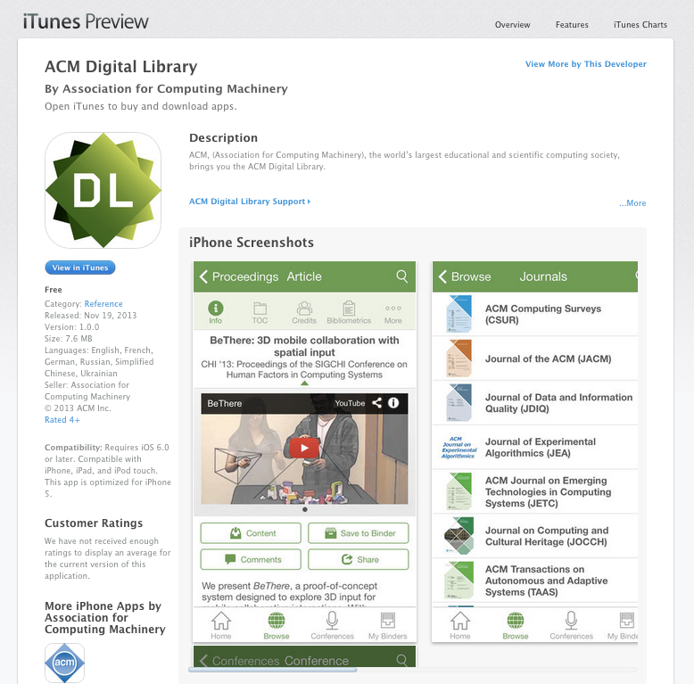
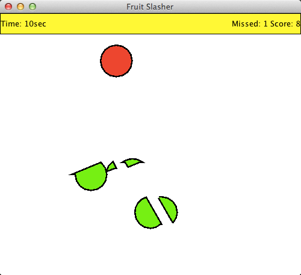

Tracy Shi
This is a portfolio that introduces some projects I have done in previous internships and in school.
Inkling Axis App
I was working on Inkling Axis iOS application when I was doing internship at Inkling. The main feature I created was My Library Search. This Library Search allows users to search across book contents, view search suggestions, browse and filter search results. Offline search was also implemented as well as other key features.
I also created the matching and image-fillin assessments on Inkling iOS SDK The assessments were created based on the existing consumer app.
iOS application: ACM digital library
This is an iOS app I developed when I was doing co-op at Pivotal Labs. I was paired up with a full time engineer, and together we built this application from scratch.
It is a digital library of ACM publications. There are many awesome features such as manage favourite publications, comment/download articles, browse upcoming conferences and save events to calendar.

'Straights' card game
This is a Straights card game built in my second year. It has complete UI and functionality. It allows up to four human players, or you can play against computer players!
X Windows and Android App: Fruit Slasher
A 'Fruit Slasher' game that mimics Fruit Ninja. The fruits don't look like fruits yet.. but it's still fun to play!

A Timer using X Windows and Xlib
A Timer =D
WLPP Compiler
In class CS241, we designed and implemented a WLPP compiler in both C++ and Scheme. WLPP is a programming language that contains a subset of C++.
I implemented a scanner, a parser, a syntax analyzer and a code generator based on the language specifications. The compiler was tested against large WLPP programs in school's testing environment, and the efficiency of the generated assembly programs were examined.
Concepts of compiler and MIPS assembly language were applied.
A Micro-kernel built in OS class
Designed and implemented a micro-kernel that provides a basic multiprogramming environment, with five priority levels, preemption, memory management, message-based inter-process communication, a timing service, system console I/O and debugging support.